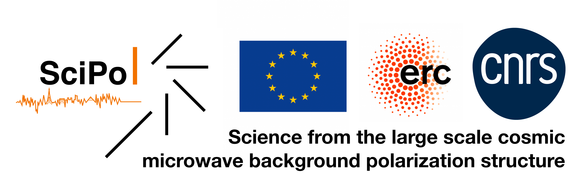
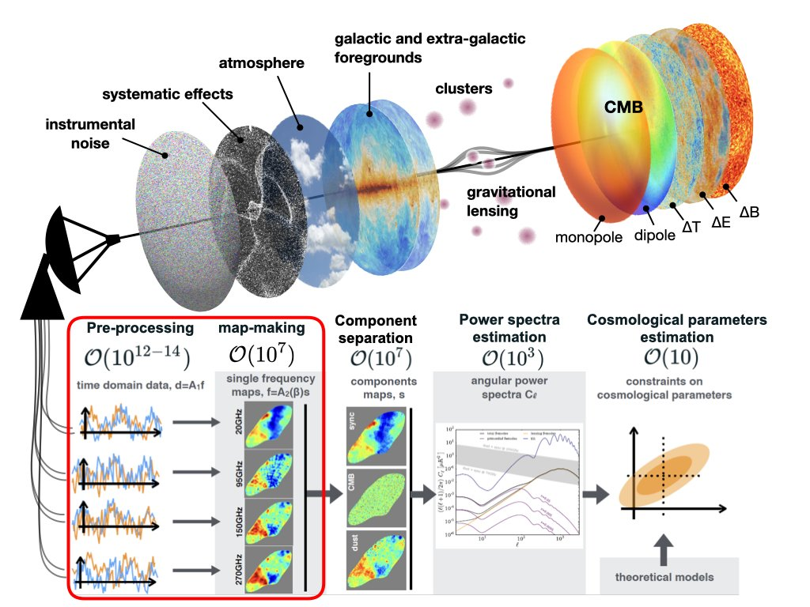
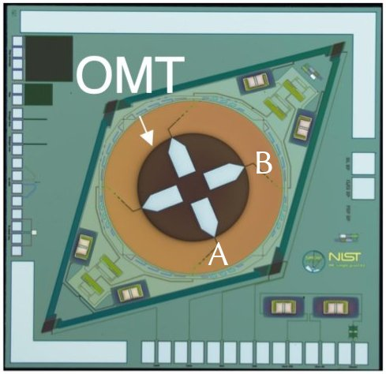
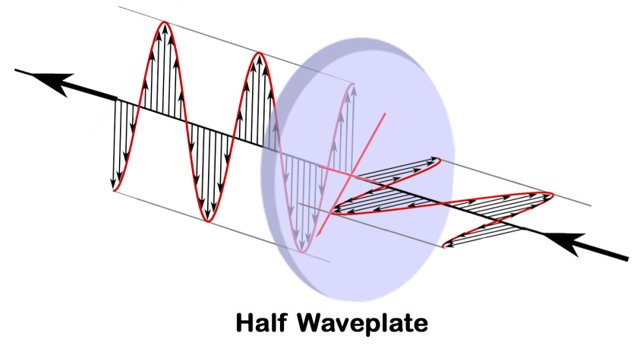
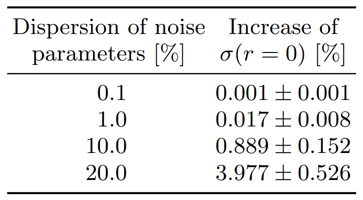
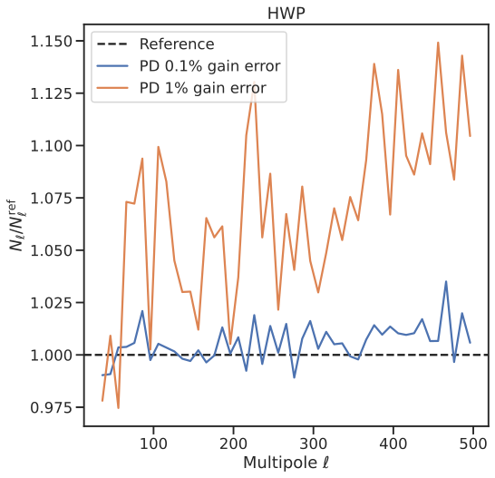
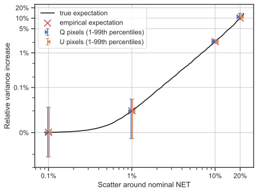

CMB-France #7
Unbiased CMB polarisation maps from the ground with minimal assumptions about atmospheric emission [arXiv:2509.16302]
Simon Biquard
APC/CNRS – moving to University of Manchester
15 October, 2025

CMB map-making in a nutshell
From time-ordered data to maps
map-making = from time-ordered data (TOD) to sky maps at observed frequencies
data reduction step: ~6 orders of magnitude

Linear data model
\[ d = Ps + Tx + n \]
- we know \(d\) (the data)
- we estimate \(s\) (sky maps) and marginalise over \(x\) (spurious signals)
- we model \(P\) (pointing) and \(T\) (templates)
- we assume that \(n\) (noise) has covariance \(N\)
\(T\) examples:
- “baselines” (constant offsets) → destriping
- HWP or scan-synchronous signals
“Map-making” is a linear operation \(\hat s = L d\) that maps measurements to estimated sky maps.
Unbiased estimators
Generic linear unbiased estimator [Poletti et al. 2017] \[ \hat s = (P^\top F_T P)^{-1} P^\top F_T d \]
with filtering and weighting operator \[ F_T = W \left[\mathbb I - T (T^\top W T)^{-1} T^\top W \right] \]
- filters out unwanted signals (columns of \(T\))
- weights orthogonal modes by weight matrix \(W\)
- “single step destriper” with generalised templates
Minimum variance (optimal) if \(W = N^{-1}\) (generalised least squares, GLS).
Polarisation maps from the ground
SB, Errard and Stompor, 2025 [arXiv:2509.16302, submitted to PRD]
Observing from the ground
- Major challenge: atmosphere
- much brighter than CMB
- loading: increase detector noise
- turbulence: spatial + temporal variations
- negligible linear polarisation
- Hardware solutions
- dual-polarisation detectors
- continuously rotating HWP




Unbiased polarisation map-making
Focus on unbiased reconstruction of polarisation (\(Q\) and \(U\)).
Data: \(d = Ps + Tx + n\)
- Minimal model
- \(T\) very general: no specific temporal or spatial structure
- atmosphere identical for orthogonal detectors
- Down-weighting (DW)
- no template, \(Tx \rightarrow n^\mathrm{atm}\)
- GLS with \(W = (N_\mathrm{atm} + N_\mathrm{instr})^{-1}\)
- stationary noise, independent between detectors
- Ideal reconstruction
- atmosphere-free data: \(d = P s + n\) (instr. noise only)
- GLS with \(W = N_\mathrm{instr}^{-1}\)
- benchmark tool
Pair differencing
Minimal model: \(T \rightarrow \mathbb I\) \[ d = \begin{bmatrix} d^A \\ d^B \end{bmatrix} = \begin{bmatrix} \mathbb I \\ \mathbb I \end{bmatrix} x + \begin{bmatrix} P_{QU} \\ -P_{QU} \end{bmatrix} s_{QU} + \begin{bmatrix} n^A \\ n^B \end{bmatrix} \]
GLS template filtering estimator gives \[ \hat s_{QU} = (P_{QU}^\top N_-^{-1} P_{QU})^{-1} P_{QU}^\top N_-^{-1} d_- \] with \(d_- \equiv d^A - d^B\) and \(N_-\) the covariance of \(n^A - n^B\).
Minimal model equivalent to pair-differencing (PD).
Used e.g. in QUaD [arXiv:0805.1944], BICEP/Keck [arXiv:1403.4302], POLARBEAR [arXiv:1403.2369], SPT-3G [arXiv:2505.02827].
Questions
- Compare pair differencing and down-weighting
- Compare with ideal reconstruction
- Impact of systematic effects
Numerical simulations
- SAT with 350 pairs of detectors + HWP
- Atmosphere simulation using TOAST 3 framework
- Instrumental \(1/f\) noise
- \(S(f) = \mathrm{NET}^2 [1 + (f_\mathrm{knee}/f)^\alpha]\)
- variation around nominal values
- Map-making code: MAPPRAISER library [arXiv:2112.03370]

mappraiser architecture. Credit: Hamza El Bouhargani.
Results: PD vs DW
Implicit differencing in DW (\(W_A = W_B\)) necessary to avoid atmosphere leakage.


Results: impact on \(r\)
- 25 realisations of realistic instrumental \(1/f\) noise
- detector-dependent parameters (knee, slope, white level)
- noise power spectrum \(N_\ell^{BB}\) from reconstructed maps \(\hat s^\mathrm{pd}_{QU}\)
Fisher forecast \[ \sigma(r=0)^{-2} \approx \frac{f_\text{sky}}{2} \times \sum_{\text{bins $b$}} \Delta_\ell (2\ell_b+1) \Bigg( \frac{C_{\ell_b}^{BB,\text{prim}} \rvert_{r=1}}{C_{\ell_b}^{BB,\text{lens}} + \langle N_{\ell_b}^{BB} \rangle} \Bigg)^2 \]
Compare \(\sigma(r=0)\) from PD with ideal reconstruction:

Results: gain errors
- random gain error in pairs
- additional noise comparable to case with uneven detector noise at low multipoles
- efficient mitigation by HWP
Case-by-case analysis required for each systematic and each method

Conclusions
- We want ground experiments to measure/constrain \(r\)
- For this, we need a robust (and efficient) analysis pipeline
- This work
- clarifies assumptions behind pair differencing and down-weighting
- demonstrates near-optimal performance of pair differencing with realistic instrumental noise
- shows why orthogonal detector pairs + HWP are a powerful combination
- Next steps
- other systematics (pointing, beam, HWP… you name it)
furaximplementation (cf. previous talks by Wuhyun & Pierre) and application to Simons Observatory SAT data
Backup
Practical considerations
- Size of the problem
- \(\mathcal O(1000)\) detectors + months of data + sampling @100 Hz → \(n_t \sim 10^{11}\) samples (TB scale)
- resolution + sky coverage + Stokes (I)QU → \(n_p \sim 10^5 - 10^8\) sky pixels
- correlations → process data in one go
- Numerical efficiency and parallelism are key!
- Noise correlations \(N\) (size \(n_t \times n_t\))
- split data in chunks (trade-off efficiency/quality)
- assume noise is stationary in each chunk, \(N(t,t')=N(\lvert t-t' \rvert)\)
- characterise in Fourier space (power spectral density, PSD)
- Iterative solvers
- \(\hat s = A^{-1} b\) → instead solve \(A s = b\)
- store \(A\) implicitly without constructing the whole matrix
- preconditioned conjugate gradient (PCG) algorithm
- convergence speed influenced by noise correlations
Results: PD map sensitivity
White instrumental noise.
- Ideal if \(\sigma_A = \sigma_B\)
- How much degradation if \(\sigma_A \neq \sigma_B\)?
- Excess variance depends on \(\varepsilon \equiv \frac{\sigma_A^2 - \sigma_B^2}{\sigma_A^2 + \sigma_B^2}\)
- Suboptimal propagation of noise levels after differencing

Simon Biquard – CMB-France 7 – October 2025